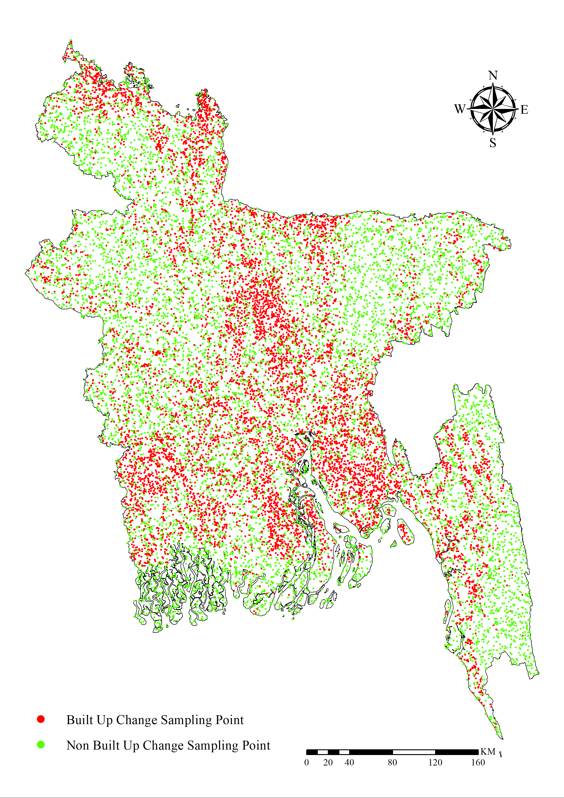

Bangladesh is experiencing rapid urbanization driven by multiple interacting factors, including population dynamics,
economic activity and employment patterns, topography (elevation), proximity to urban centers, transportation networks,
and the spatial distribution of waterbodies. However, the relative influence of these drivers on patterns of urban change
remains insufficiently examined in the literature. To address this gap, this study applies and compares four modeling
approaches—Logistic Regression, Random Forest, XGBoost, and Artificial Neural Networks—to quantify how these factors shape
built-up land expansion.
Model performance was evaluated using standard classification metrics, including accuracy, precision, recall, F1-score,
and the area under the ROC curve (ROC–AUC). Overall, the Random Forest and XGBoost models demonstrated superior predictive
performance compared to Logistic Regression and the Artificial Neural Network. Results are presented at the divisional level
to capture and compare regional heterogeneity in the determinants of urban change across Bangladesh.
The findings provide several policy-relevant insights. Across most divisions, population, elevation, and distance to waterbodies
consistently emerged as the most influential predictors of built-up expansion. Notably, Barishal exhibits a distinct spatial pattern:
built-up growth there is strongly associated with proximity to the national highway, a relationship that is not observed to the same
extent in other divisions. Earth observation analysis, supported by field verification, suggests that this pattern is explained by a
major river that constrains urban expansion and channels growth preferentially toward highway corridors. These empirically grounded
insights can support urban planners and policymakers in designing context-sensitive strategies to guide sustainable and resilient
urban development.
🔍 Project Description
Bangladesh experiences rapid urbanization due to several factors such as population, economic work environment, elevation, proximity to city centre, roads, waterbodies. Hence the influence of these factors on urban change remains underexplored. To address this research gap, we have utilized several models to observe the effects of these factors on urban change. The models are Logistic Regression, Random Forest, XG Boost, and Artificial Neural Network. Among all the models, Random Forest and XG Boost performed comparatively well than the other two models. Several parameters such as accuracy, precision, recall, F1-Score, and ROC AUC are checked for the model’s evaluation. The results are presented division-wise for Bangladesh to compare the regional variation of these factors. The results indicate meaningful and comprehensive insights, such as population, elevation, and distance to waterbodies being the primary features for urban change. Exceptional results were also observed for a region called Barisal, where built-up change is dictated by distance to the National Highway, whereas other regions did not depict this type of result. From Earth observation and field verification, it was observed that the region of Barisal's urban change is hindered by a major river and grows towards the national highways. These meaningful insights can help urban planners and policymakers to formulate plans to guide sustainable development.
💡 Selected Factors


🗺️ Sampling Points

📊 Results
Urban Density Change


Model Outcome

K-Means Cluster


Seaborn Pairplot